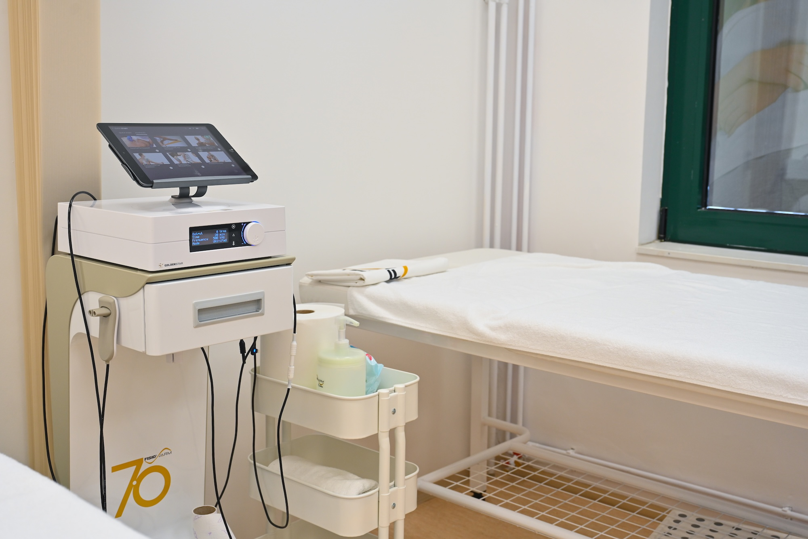
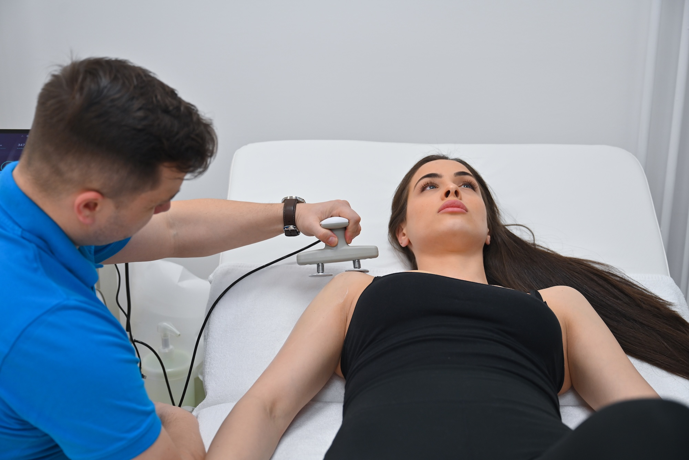

TECAR terapija
Uređaji: Tecar FisioWarm 7.0
Kapacitivno‑rezistivna RF (CRet) terapija povećava mikrocirkulaciju i metabolizam, ublažava bol i ubrzava oporavak tetiva, mišića i zglobova. Kombinujemo kapacitivne/rezistivne elektrode i manuelne tehnike.
Indikacije
- Akutni i hronični bol
- Poremećaji funkcije i pokretljivosti
- Podrška regeneraciji tkiva
Šta da očekujete
Tretman je individualno dozirán; objašnjavamo senzacije i trajanje (obično 10–20 min po regiji).

